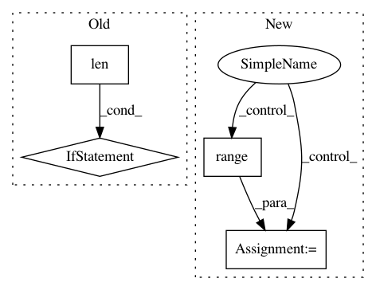

2546dbadb426502d169aed5beb5933255b6f2208,examples/tsf/utils.py,,get_batches,#Any#Any#Any#Any#Any#,51
Before Change
// half as batch size
batch_size = batch_size // 2
if len(x0) < len(x1):
x0 = makeup(x0, len(x1))
if len(x1) < len(x0):
x1 = makeup(x1, len(x0))
n = len(x0)
// if shuffle:
// random.shuffle(x0)
// random.shuffle(x1)
if shuffle:
order0 = range(n)
z = sorted(zip(order0, x0), key=lambda i:len(i[1]))
order0, x0 = zip(*z)
order1 = range(n)
z = sorted(zip(order1, x1), key=lambda i:len(i[1]))
order1, x1 = zip(*z)
batches = []
s = 0
while s < n:
t = min(s + batch_size, n)
if t < s + batch_size:
break
batches.append(get_batch(x0[s:t] + x1[s:t],
[0] * (t-s) + [1]*(t-s),
word2id,
batch_size))
After Change
if len(x1) < n:
x1 = makeup(x1, n)
if sort:
order0 = range(n)
z = sorted(zip(order0, x0), key=lambda i:len(i[1]))
order0, x0 = zip(*z)
order1 = range(n)
z = sorted(zip(order1, x1), key=lambda i:len(i[1]))
order1, x1 = zip(*z)
else:
order0 = range(n)
order1 = range(n)
random.shuffle(order0)
random.shuffle(order1)
x0 = [x0[i] for i in order0]
x1 = [x1[i] for i in order1]
In pattern: SUPERPATTERN
Frequency: 3
Non-data size: 4
Instances
Project Name: asyml/texar
Commit Name: 2546dbadb426502d169aed5beb5933255b6f2208
Time: 2017-12-02
Author: zichaoy@cs.cmu.edu
File Name: examples/tsf/utils.py
Class Name:
Method Name: get_batches
Project Name: uber/ludwig
Commit Name: b041b42765da9d7e6820e4d57354f9803c231b9e
Time: 2020-04-19
Author: kaushikbokka@gmail.com
File Name: ludwig/utils/hyperopt_utils.py
Class Name: ParallelExecutor
Method Name: execute
Project Name: NifTK/NiftyNet
Commit Name: 5af1994def9a52fe1ffd2847b2519f1e27cfbc64
Time: 2017-08-12
Author: wenqi.li@ucl.ac.uk
File Name: niftynet/io/misc_io.py
Class Name:
Method Name: do_resampling